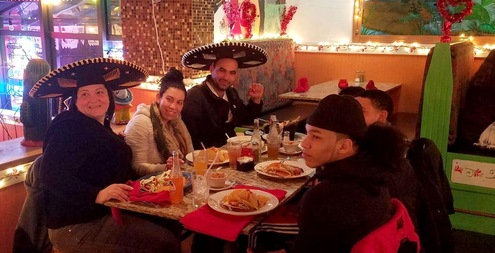

More Than a Meal
La Chelita is more than just a place to get a good meal. It is a family story that began in the 1970s, when Graciela “Chelita” Ramírez opened a small tortillería called La Tapatía. She welcomed families from the neighborhood with handmade tortillas, traditional Jalisco-style food, and the kind of warmth that made people feel at home.
Today, her granddaughter Jessica carries that story forward. Inspired by the recipes and traditions passed down through her family, she brings her own Mexican-American Texas influence to the table while keeping the spirit of her grandmother’s cooking alive.
At La Chelita, we believe the best memories are made around a table, sharing a meal with the people who matter. Whether you've been coming here for years or are visiting for the first time, we want you to feel like part of the family. We're proud of our roots, grateful for our community, and excited to share a little piece of our story with you.